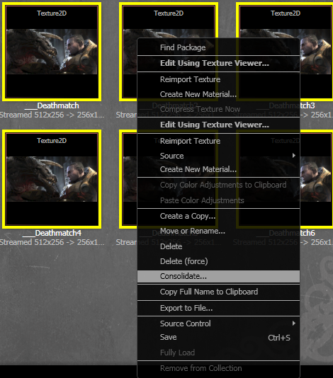
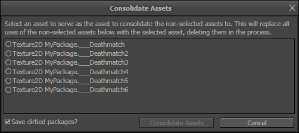
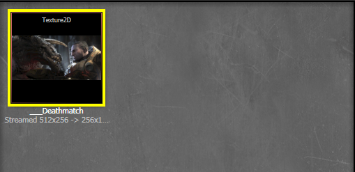

UDN
Search public documentation:
AssetConsolidationTool
日本語訳
中国翻译
한국어
Interested in the Unreal Engine?
Visit the Unreal Technology site.
Looking for jobs and company info?
Check out the Epic games site.
Questions about support via UDN?
Contact the UDN Staff
中国翻译
한국어
Interested in the Unreal Engine?
Visit the Unreal Technology site.
Looking for jobs and company info?
Check out the Epic games site.
Questions about support via UDN?
Contact the UDN Staff
UE3 Home > Unreal Editor and Tools > Asset Consolidation Tool
Asset Consolidation Tool
Overview
Using the Asset Consolidation Tool
Invoking the Asset Consolidation Tool
To gain access to the tool, you simply select at least one asset you wish to use in the consolidation process within the context browser. Afterwards, right-click and within the presented context menu, select "Consolidate..." The consolidation dialog will appear, populated with all of the assets that were selected while summoning the tool. Additionally, further assets can be added as desired by dragging them from the content browser into the main part of the dialog. Note that consolidation is generally restricted to selected objects of the same type, with some exceptions allowed for textures and materials. If you do not see the "Consolidate..." option or a drag-drop operation was not allowed, you should make sure you've only selected assets of the same type! If you've accidentally added an asset that you did not intend, you can remove it from the dialog by selecting it and pressing the delete key.|  |
| Here a texture has been duplicated many times! Selecting them all and right-clicking grants the option to 'Consolidate...' |
Consolidating Assets
Once you have populated the dialog with all of the assets you would like to use in the consolidation process, select one of the assets to serve as the "asset to consolidate to" and then press "Consolidate Assets." All references to the assets you did not choose from the list will be replaced with references to the asset you did, deleting the non-chosen assets in the process. Note that "Consolidate Assets" will not be a valid option until at least two assets are in the dialog and at least one is selected.|  |
| Inside the consolidate dialog, selecting an asset marks it as the 'object to consolidate to' |
|  |
| All of the duplicates have been consolidated to the chosen asset! |
How the Asset Consolidation Tool Works
Best Practices
- Improper use of the Asset Consolidation Tool can be extremely dangerous given the nature of what it does. Users of the tool should always think carefully about what they are about to do and decide if the resulting operation would make sense in the context of their assets. The tool attempts to guard against some obviously incorrect consolidations, but users should still always exercise caution in order to avoid ruining packages. Keep in mind that the tool will delete consolidated assets and route previous uses of them to the selected object; it is not an alternative method of doing a "replace actor"-type operation.
- The Asset Consolidation Tool makes heavy use of object redirectors, meaning it is a good idea to occasionally make use of the Fixup Redirects Commandlet some time after the use of the Asset Consolidation Tool.
- While the Asset Consolidation Tool will attempt to forcibly replace references to objects to consolidate in packages/maps that are currently loaded and in memory, it is best to maximize the chance of a successful consolidation by having as few things referencing the objects to consolidate as possible while using the tool. In particular, it is extremely ill-advised to have sub-editors (such as the AnimSet editor) open and utilizing assets that are about to be consolidated.
Limitations and Caveats
- To prevent the user from accidentally destroying their packages, the Asset Consolidation Tool can only be invoked on assets that share the same class/type, with an exception made if all objects are a type of material or a type of texture(meaning that a material could be consolidated to a decal material, even though they are not strictly the same type). This restriction is in place to prevent consolidations that would certainly cause crashes and/or package destruction, such as consolidating a material into a static mesh. Even where cross-type consolidation is allowed, the tool presents a clearly visible warning that multiple types have been chosen for consolidation.
- The Asset Consolidation Tool can not always consolidate the assets the user has selected. If a user selects an "asset to consolidate to" that contains references to one of the assets to consolidate, that particular asset to consolidate will not be consolidated. Allowing such an operation would make the "asset to consolidate to" refer to itself, which would certainly lead to trouble. Additionally, root packages cannot be consolidated, though they should never show up as a valid option in the first place. At the end of a consolidation operation, the user is warned which, if any, of their assets were skipped for consolidation.
- The Asset Consolidation Tool can sometimes fail to consolidate an otherwise valid asset if not all of its references could be cleared, or it could not be deleted for some reason. This type of failure is critical, resulting in "partial consolidation," in which some uses of an asset have been consolidated and some have not. This type of failure should be quite rare, but should the situation arise, the user is warned with a dialog showing the affected assets and potentially affected packages. The user should NOT save any of the affected assets/packages or they will be accepting a potentially disastrous partial consolidation.
- As mentioned in Best Practices, it is extremely ill-advised to utilize the Asset Consolidation Tool while potentially affected assets are being used in various sub-editors, such as the AnimSet editor. Ultimately most sub-editors as of yet do not respond well to having references swapped from under them, so using the sub-editors while consolidating can lead to the sub-editors being put into invalid states and/or potentially crashing.
- For now, once a consolidation operation has been successfully performed, it is advised to save the relevant packages before attempting to load into memory any unloaded packages that also reference one of the consolidated objects. A currently outstanding Content Browser/Object Redirector bug can cause consolidated assets to reappear in the browser if a referencing package is loaded before saving.
- The Asset Consolidation Tool only replaces references to the consolidated objects in packages that were already loaded at the time of the operation. It relies on object redirectors to fix up the remaining references in unloaded packages. This means care should be taken to not perform an action that will trample on, overwrite, delete, etc. the redirectors, unless specifically desired. Otherwise, some packages will correctly be fixed up and some won't. As outlined earlier, making use of the Fixup Redirects Commandlet can alleviate this issue.